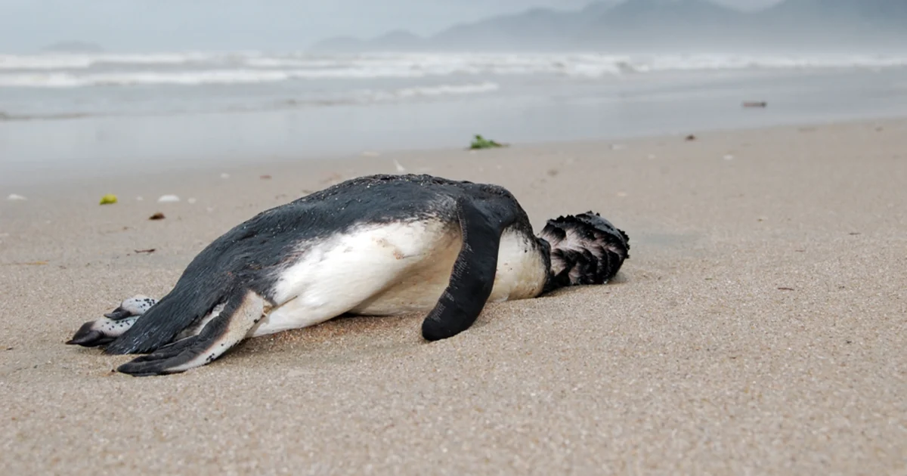
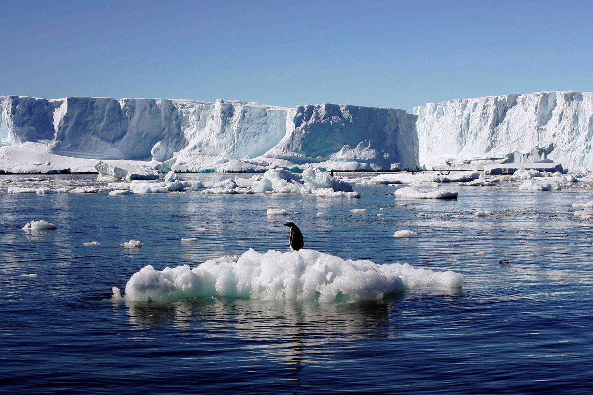
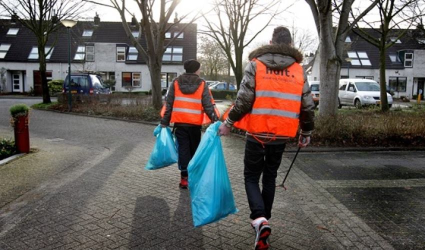

Welcome to the Chill the Earth Out Project
We aim to mitigate the effects of climate change through innovative strategies like cloud seeding, canal implementation, and high-albedo surfaces.
Cloud Seeding
Cloud seeding is a weather modification technique that aims to increase precipitation.
Benefits
Enhances water supply and can help cool temperatures.
Success Stories
Countries like the USA and China have successfully implemented cloud seeding initiatives.
Canal Implementation
Canal systems help cool urban areas by channeling water effectively.
Environmental Benefits
Reduces heat islands and promotes biodiversity.
Community Engagement
Community members can help maintain and advocate for local canals.
High-Albedo Surfaces
High-albedo surfaces reflect more sunlight, reducing heat absorption.
Case Studies
Cities like Los Angeles have implemented high-albedo pavements to combat heat.
Community Engagement
Get involved! Join local initiatives to support the project.
How You Can Help
Participate in workshops and share awareness through social media.